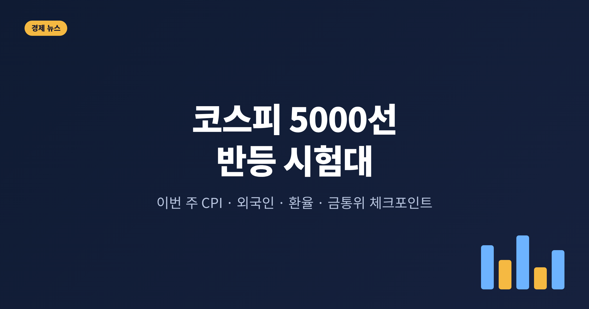
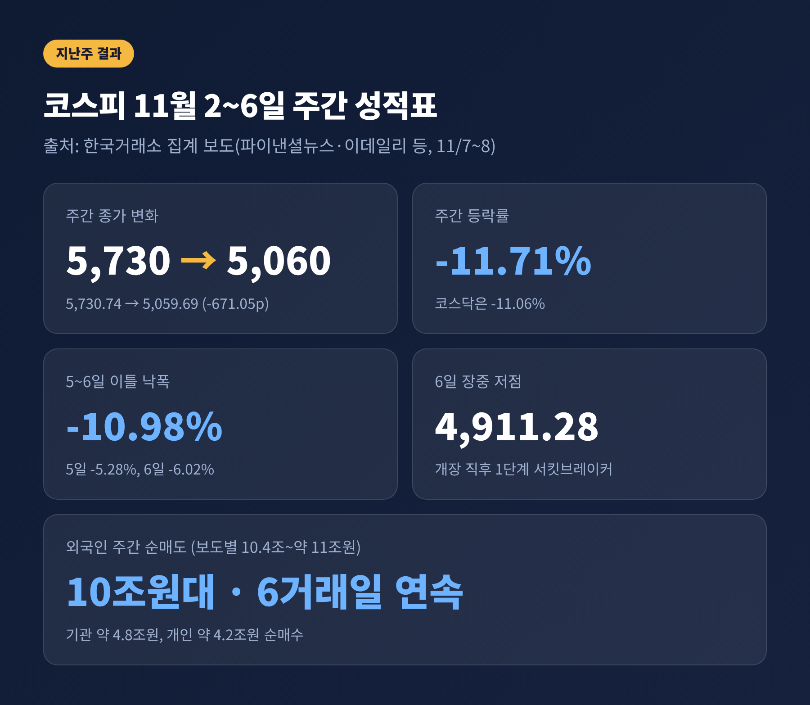
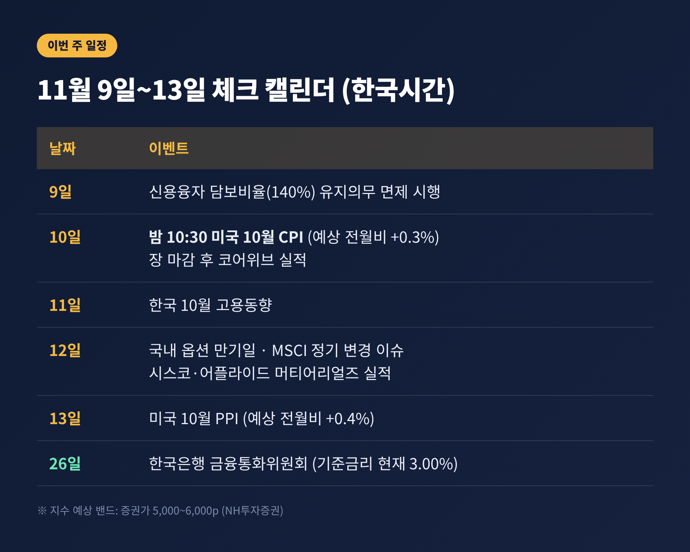
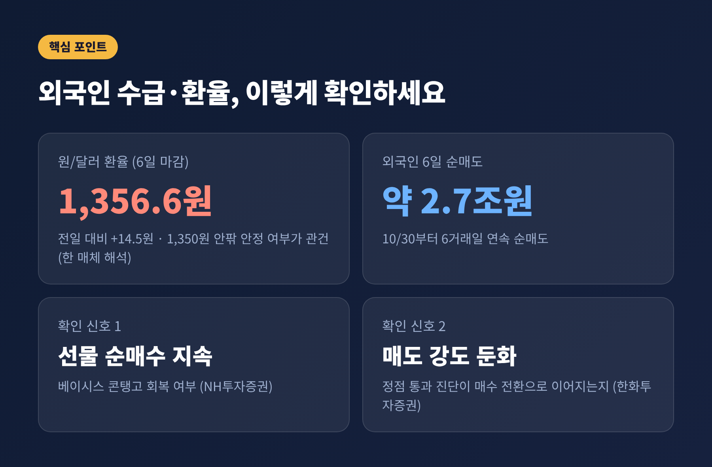
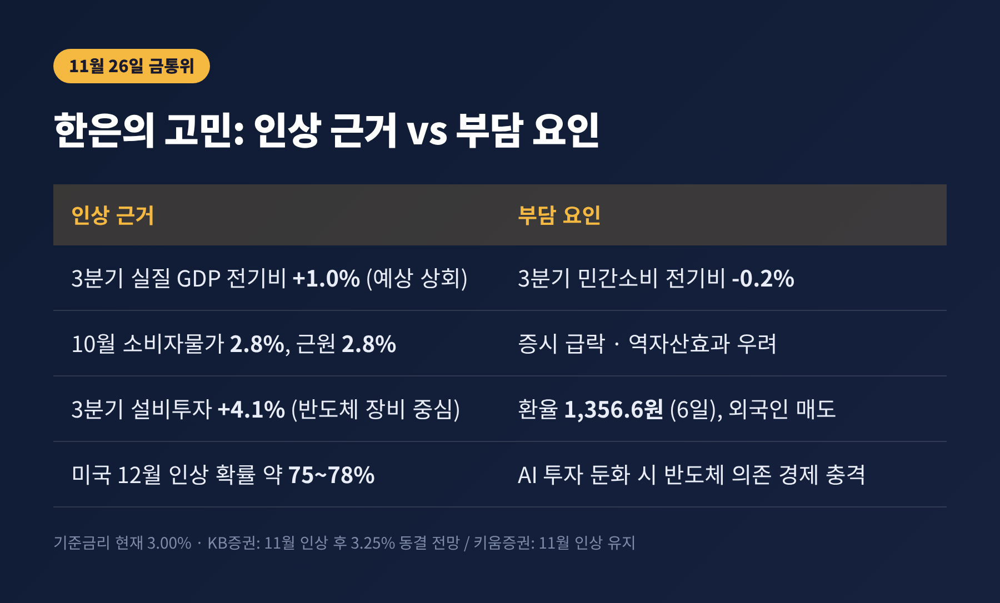
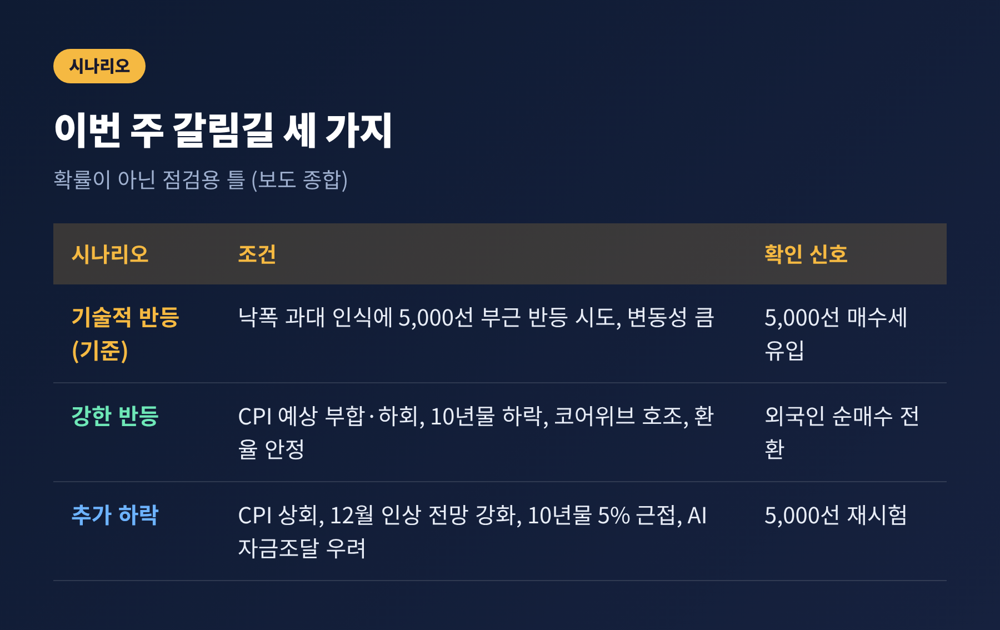

이번 글에서는 11월 9일부터 시작되는 한 주 동안 시장이 무엇을 보고 움직일지 정리해 보겠습니다. 폭락의 원인을 다시 풀기보다, 이번 주에 확인할 지표와 일정, 그리고 갈림길별 시나리오에 초점을 맞췄습니다.
3줄 요약
1. 지난주 코스피는 11.71% 내렸고, 반등 여부는 10일 밤 발표되는 미국 10월 CPI에 가장 크게 좌우됩니다.
2. 외국인 순매도가 잦아들고 원/달러 환율이 1,350원 안팎에서 안정되는지가 두 번째 관문입니다.
3. 11월 26일 한국은행 금통위는 물가와 증시 충격 사이에서 고심하는 중이며, 이번 주 지표가 그 판단에 영향을 줍니다.
10월 30일 5,730.74였던 코스피는 6일 5,059.69로 마감했습니다. 한 주 동안 671.05포인트, 11.71% 내린 것입니다. 코스닥도 724.38에서 644.27로 11.06% 하락했습니다.
낙폭은 5일과 6일에 몰렸습니다. 5일 5.28%, 6일 6.02% 하락해 이틀간 10.98%가 빠졌습니다. 6일에는 개장 직후 1단계 서킷브레이커가 발동됐고, 장중 저점은 4,911.28이었습니다. 종가에서는 5,000선을 지켰지만, 장중 5,000선 이탈은 2월 이후 약 9개월 만이었습니다.
방아쇠는 미국이었습니다. 11월 3일 중간선거에서 민주당이 상·하원 다수당을 확보하자 AI 데이터센터 규제가 강화되리라는 우려가 퍼졌습니다. 5일(현지시간) 필라델피아 반도체지수는 12.25% 폭락했고, 한국의 삼성전자와 SK하이닉스가 그 충격을 그대로 받았습니다.
여기서 구분해 둘 점이 있습니다. 지금까지 확인된 것은 규제 '우려'이지, 규제가 실제로 시행됐다는 소식이 아닙니다. 시장이 기대와 불안을 먼저 가격에 반영한 셈입니다.

이번 주는 변수가 한꺼번에 몰려 있습니다. 한국시간 기준으로 정리하면 다음과 같습니다.
증권가는 이번 주 코스피가 5,000~6,000선에서 움직일 것으로 내다봅니다. 범위가 1,000포인트에 달한다는 사실이 불확실성의 크기를 보여 줍니다.

시장의 눈은 인플레이션으로 옮겨 갔습니다. 연준은 10월 28일 기준금리를 3.75~4.00%로 동결했지만, 위원 두 명은 0.25%포인트 인상을 주장했습니다. 이후 10월 고용이 16만 5,000명 늘어 예상(약 6만 5,000명)을 크게 웃돌았고, 실업률은 4.1%로 내려갔습니다.
고용이 강하면 금리를 올릴 이유가 커집니다. CME 페드워치 기준 12월 인상 확률은 6일 76.33%로, 전날 66.9%에서 뛰었습니다. 보도에 따라 75~78% 안팎으로 서로 조금씩 다르게 전해집니다.
10월 CPI의 시장 예상치는 전월 대비 0.3%입니다. 9월 상승률 0.6%에서 둔화하는 그림입니다. 예상에 부합하거나 낮으면 인상 우려가 누그러지고, 낙폭이 컸던 성장주가 반등할 여지가 생깁니다. 반대로 근원물가까지 강하게 나오면 미국 10년물 금리(6일 장중 4.878%)가 5%를 향해 오를 수 있습니다. 대신증권 이경민 연구원은 이 경우 증시에 부담이 된다고 짚었습니다.
한 가지 알아 둘 점이 있습니다. 보도에 따르면 지난해 10월 연방정부 셧다운으로 가격 조사가 없어, 이번에는 전년 동월 대비 수치가 발표되지 않습니다. 해석할 때 전월 대비 수치가 중심이 됩니다.
PPI는 13일에 나옵니다. 헤드라인 전월비 0.4%, 전년비 6.6%(블룸버그 전망)가 거론됩니다. 전년비는 약 4년 만의 최고 수준이라는 점에서, 물가 우려를 한 번 더 확인하는 자리가 될 수 있습니다.
외국인은 10월 30일부터 6거래일 연속 순매도였습니다. 주간 순매도액은 보도마다 10조 3,810억 원, 10조 4,427억 원, 약 11조 원으로 다르게 집계되었습니다. 어느 쪽이든 10조 원을 넘는 규모입니다. 같은 기간 기관(약 4조 8,000억 원)과 개인(약 4조 2,000억 원)이 받아 냈습니다.
환율도 같은 방향이었습니다. 6일 원/달러 환율은 14.5원 올라 1,356.6원에 마감했습니다. 외국인에게 원화 약세는 환차손 부담을 키웁니다. 한 증권 전문 매체는 외국인이 돌아오려면 환율이 1,350원 안팎에서 안정돼야 한다고 봤습니다. 이 부분은 해당 매체의 해석이라는 점을 감안해 읽으시길 권합니다.
체크할 신호는 두 가지입니다.

이번 하락의 뿌리가 AI 인프라 투자 심리인 만큼, 실적 발표가 중요합니다. 10일 코어위브는 매출뿐 아니라 설비투자, 부채, 현금흐름, 수요 전망이 주목받습니다. 12일 어플라이드 머티어리얼즈의 반도체 장비 수요 전망은 데이터센터 투자가 실제 주문으로 이어지는지 가늠하게 해 줍니다.
시각은 엇갈립니다. 우려 쪽은 데이터센터 허가 지연과 AI 인프라 기업의 높은 차입 부담을 지적합니다. 이데일리에 따르면 민주당이 주지사를 차지한 5개 주에서 착공·계획 중인 데이터센터는 505개(142.5GW)로, 미국 전체 계획 전력의 41.2%에 해당합니다.
반대 쪽은 전면 차단 가능성이 낮다고 봅니다. NH투자증권 나정환 연구원은 민주당도 중국과의 AI 경쟁에는 찬성하고, 규제 논의는 주민 전기요금 부담 완화에 맞춰져 있다고 분석했습니다. 키움증권 김유미 연구원은 투자 사이클이 끝난 것이 아니라 속도를 조절하는 과정으로 봤습니다.
저는 어느 한쪽을 단정하기 이르다고 생각합니다. 다만 한국 입장에서는 한국은행도 AI 산업 보고서에서 지적했듯, 글로벌 반도체 공급망과 밀접한 경제 구조라 이 논쟁의 결과가 수출과 성장에 직접 영향을 줄 수 있습니다.
9일부터 증권사는 신용융자 담보비율(현행 140%) 유지의무를 면제받습니다. 주가가 더 떨어져도 담보 부족을 이유로 한꺼번에 강제 매도(반대매매)가 쏟아지는 상황을 줄이려는 조치입니다. 2022년 7월 이후 4년여 만의 일입니다.
이 조치는 매도 압력을 늦춰 줄 뿐, 주가를 끌어올리지는 않습니다. 빚을 내서 산 투자자의 부담이 사라지는 것도 아닙니다. 증권사마다 담보유지비율을 탄력적으로 운용할 수 있어서, 실제 적용은 회사별로 다를 수 있습니다. 상세한 내용은 앞서 게시한 글을 참고해 주시기 바랍니다.
한국은행 기준금리는 현재 연 3.00%입니다. 시장은 11월 26일 0.25%포인트 인상(3.25%)을 높게 봐 왔습니다. 근거는 분명합니다. 3분기 실질 GDP가 전기 대비 1.0% 성장해 예상을 웃돌았고, 10월 소비자물가 상승률은 2.8%, 근원물가도 2.8%였습니다.
다만 주가 급락과 환율 상승이 변수로 올라왔습니다. 자산 가치가 줄면 소비가 위축될 수 있고, 3분기 민간소비는 이미 전기 대비 0.2% 감소했습니다. 금리 스와프 시장에서는 한때 추가 100bp 인상까지 반영됐으나, 지금은 6개월 후 27.5bp, 9개월 후 31.5bp 수준입니다. 한 번의 인상을 약간 웃도는 정도입니다.
기관 전망도 갈립니다.
이번 주 미국 CPI와 환율, 외국인 수급은 모두 이 결정의 재료입니다. 미국 물가가 높게 나와 달러가 강해지고 환율이 더 오르면 한은의 선택지는 좁아집니다. 반대로 시장이 안정되면 인상 명분은 선명해집니다. 이는 필자의 해석이며, 결과는 금통위가 정합니다.

보도를 종합하면 이번 주 흐름은 대략 세 갈래로 나눠 볼 수 있습니다. 확률이 아니라 점검용 틀입니다.

정리하면 이렇습니다. 이번 주는 방향보다 변동성이 먼저 나타날 가능성이 큽니다. 확인할 순서는 10일 밤 CPI, 이어서 10년물 금리와 코어위브 실적, 그리고 외국인 수급과 환율입니다.
"숫자가 나오기 전에는 방향을 단정하지 않는다." 급락 뒤의 한 주를 보내는 데 필요한 태도는 이 정도면 충분하다고 생각합니다. 지표 하나하나를 확인하며 판단을 미루는 것도 하나의 선택입니다.
유의사항: 이 글은 공개된 보도를 바탕으로 정리한 정보 제공용 해설이며, 투자 권유가 아닙니다. 투자 판단과 그에 따른 책임은 투자자 본인에게 있습니다. 수치는 2026년 11월 6~8일 보도(2차 자료) 기준이며, 외국인 순매도액·12월 인상 확률 등은 보도마다 조금씩 달라 범위로 표기했습니다.